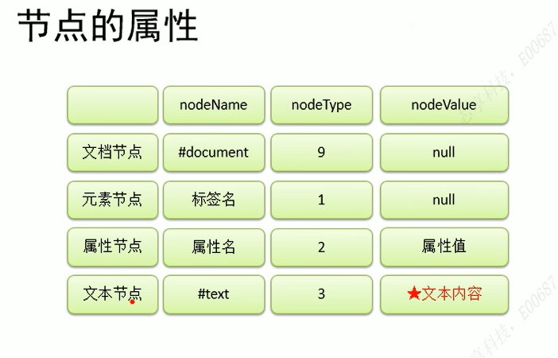

js代码编写至标签的onclick属性中
js推荐引入外部.js文件，使用script标签+src.一旦引入外部js代码，就不能再编写代码，即使编写浏览器也会忽略。如有需要可以再闯进新的script白哦前编写内部代码
1、js严格区分大小写
2、JS每条语句以分号；结尾--如果不加分号，浏览器自动添加性能消耗。有时候浏览器会加错分号
3、js会忽略多个空格和换行
var 声明变量 var a; a=123;
字母、数字、_、$
不能以数字开头
不能是ES中的关键字或保留字
驼峰命名，首字母小写，每个单词大写，其余小写
1、字符串:强转变量.toString()、String(变量)强转
2、Number(整数和浮点数)，Number(变量)函数、parseInt等函数
3、Boolean:Boolean(变量)函数
4、Null和Undefined（typeof检查null返回object）
5、其他进制数字
1、16进制以0x开头
2、8进制以0开头
3、10进制以0b开头
1、算术运算符 + - * / %
2、逻辑运算符 ！非 &&与 ||或
if for switch break continue
1、创建和读取，new Object()，赋值，取值使用对象【'属性名'】
2、属性名和属性值
3、函数的参数、返回值等
4、全局作用域、函数作用域（现在自己作用域找，找不到去上一级找，一直到全局作用域，全局找不到则报错）
5、this
6、使用工厂方法创建对象：使用的构造函数是Object,导致无法区分对象
7、构造函数
8、原型对象：相当于公共区域，所有同一个类的实例都可以访问到这个原型对象，我们可以讲对象重共有的内容，统一设置到原型对象中
向MyClass中原型添加属性a:MyClass.prototype.a=123 向MyClass中原型添加方法a:MyClass.prototype.func=function(){} 使用in检查队形或原型中是否有 "name" in ;hasOwnProperties检查自身对象是否有该属性9、垃圾回收:浏览器自动回收浏览器，需要回收obj=null，将不再使用对象设置为null
10、数组
11、call和apply
当调用call和appluy都是调用函数；调用可以将一个对象指定为第一个参数，此时这个对象将称为函数执行的this12、arguments、Date、Math
（1）arguments:浏览器每次都会传递两个隐含的参数，类数组对象;可以通过length党法获取长度，可以通过下标获取参数
（2）callee:对应当前函数执行对象
13、包装类 :String() 、Number()、Boolean()，构造函数将基本数据类型转为对象过程
14、正则：new RegExp()
15、DOM:宿主对象：JS 运行环境（如浏览器、Node）提供的对象，比如浏览器的 window、document、XMLHttpRequest
文档节点
元素节点
属性节点
文本节点
16、事件